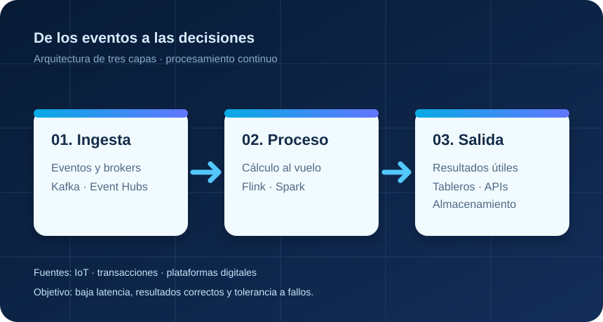

Analítica de Datos:
Stream Analytics
01 · Introducción
Los datos ya no esperan
Sensores IoT, pagos en línea y plataformas masivas generan información cada segundo, y su valor depende de qué tan rápido se actúa sobre ella.
La analítica de flujos (Stream Analytics) procesa los datos mientras viajan, en lugar de guardarlos primero para analizarlos después.
02 · Contexto
El problema del procesamiento por lotes
El procesamiento por lotes (Batch Processing) acumula datos en reposo y los analiza después, lo que genera latencias de minutos, horas o incluso días.
Cuando esperar no es opción
Detectar una tarjeta clonada, vigilar un motor industrial o reaccionar a un ataque informático requiere respuestas rápidas.
Pasar a un esquema de flujos exige resolver tres cosas a la vez: baja latencia, resultados correctos y tolerancia a fallos.
03 · Evolución
De CEP a Kafka y al modelo unificado
Surge el Procesamiento de Eventos Complejos (CEP), pensado para los mercados bursátiles.
LinkedIn libera Apache Kafka para la ingesta distribuida a gran escala, desacoplando productores y consumidores.
Akidau y colaboradores proponen un modelo unificado para tratar batch y streaming.
04 · Arquitectura
Tres capas, un flujo continuo
Los datos pasan de las fuentes a los motores de procesamiento y finalmente a los sistemas que utilizan los resultados.

05 · Componentes
¿Qué hace cada capa?
01 · Ingesta (brokers)
Reciben y distribuyen eventos. Desacoplan productores de consumidores. Ejemplos: Apache Kafka y Azure Event Hubs.
02 · Procesamiento
Transforma y calcula sobre los eventos al vuelo. Ejemplos: Apache Flink y Spark.
03 · Salida (sinks)
Entrega resultados a tableros en vivo, APIs o almacenamiento.
06 · Conceptos clave
Procesamiento con estado
Un flujo es un conjunto de datos infinito (unbounded).
Para recordar contexto entre eventos sucesivos sin saturar una base de datos, el sistema guarda un estado distribuido y persistente.
07 · Conceptos clave
Ventanas temporales
En un flujo continuo, las ventanas permiten agrupar eventos para calcular resultados por intervalos.
Tumbling
Ventanas contiguas, de tamaño fijo y sin traslape.
Hopping o sliding
Ventanas de tamaño fijo que se solapan según un intervalo de actualización.
08 · Conceptos clave
¿Cuándo ocurrió y cuándo llegó?
Event-time
Momento en que ocurrió el hecho en el mundo real.
Processing-time
Momento en el que el servidor procesa ese hecho.
Los eventos pueden llegar tarde o desordenados. Por eso se usan marcas de agua (watermarks) para decidir hasta cuándo esperar.
09 · Fiabilidad
Exactly-once
Cada evento debe afectar el estado del sistema exactamente una vez, incluso si un nodo falla.
Es una garantía importante cuando los resultados deben mantenerse correctos a pesar de interrupciones.
10 · Comparativa
Batch vs. Stream
| Parámetro | Batch | Stream Analytics |
|---|---|---|
| Datos | Finitos (bounded) | Infinitos (unbounded) |
| Latencia | Minutos a horas | Milisegundos a segundos |
| Almacenamiento previo | Obligatorio (data lake o warehouse) | Opcional (en tránsito) |
| Estado | Sin estado entre ejecuciones | Persistente y distribuido |
Los dos enfoques pueden coexistir: sirven a necesidades distintas de análisis.
11 · Motores modernos
Flink y Spark
Apache Flink
Procesa evento por evento (true streaming) con latencias menores a 50 ms. Es ideal para reglas complejas en vivo.
Spark Structured Streaming
Usa micro-lotes y rinde muy bien cuando basta una latencia de segundos.
12 · Motores modernos
Azure Stream Analytics
Una opción administrada en la nube para analizar flujos de eventos.
Consultas similares a SQL
La sintaxis familiar facilita la adopción del servicio.
En conjunto, Flink, Spark Structured Streaming y Azure Stream Analytics ilustran diferentes maneras de implementar procesamiento de eventos en tiempo real.
13 · Aplicaciones
Casos de uso
Se analiza la transacción en menos de 100 ms para bloquearla antes de autorizarla.
Vibración y temperatura de motores se analizan continuamente para predecir fallas.
El perfil del usuario se actualiza durante la misma sesión según sus últimos clics.
14 · Conclusiones
Una arquitectura complementaria
Las arquitecturas modernas, como Kappa, usan un solo motor de flujo que procesa en tiempo real y también reprocesa datos históricos releyendo el registro de eventos.
Los brokers soportan picos de volumen; a cambio, el streaming exige gestionar estados distribuidos y eventos tardíos.
15 · Recomendaciones
¿Qué sigue?
El siguiente paso es integrar la analítica de flujos con Inteligencia Artificial Agéntica para habilitar sistemas autónomos en tiempo real.
Para la industria
Adoptar estándares abiertos como Kafka y Flink para evitar el bloqueo por proveedor.
Para futuras investigaciones
Realizar benchmarks cuantitativos bajo picos de carga en escenarios IoT.
16 · Inteligencia artificial
Datos en movimiento, decisiones inteligentes
Los eventos de sensores, transacciones y aplicaciones pueden alimentar modelos de IA para detectar patrones y apoyar decisiones en tiempo real.
17 · Fuentes
Referencias
- Akidau, T., Chernyak, S., & Lax, R. (2018). Streaming Systems: The What, Where, When, and How of Large-Scale Data Processing. O'Reilly Media. Enlace.
- Apache Flink. (s. f.). Time and Order in Streams. Apache Software Foundation. Enlace.
- Apache Kafka. (s. f.). Apache Kafka Documentation. Apache Software Foundation. Enlace.
- Apache Spark. (s. f.). Structured Streaming Programming Guide. Apache Software Foundation. Enlace.
- Kleppmann, M. (2017). Designing Data-Intensive Applications. O'Reilly Media.
- Microsoft. (s. f.). Choose a stream processing technology. Azure Architecture Center. Enlace.
El futuro también ocurre en tiempo real.
Analítica de Datos: Stream Analytics
UNAM · FES Acatlán
Profesor: Rosas Hernández Javier
Octubre 2026